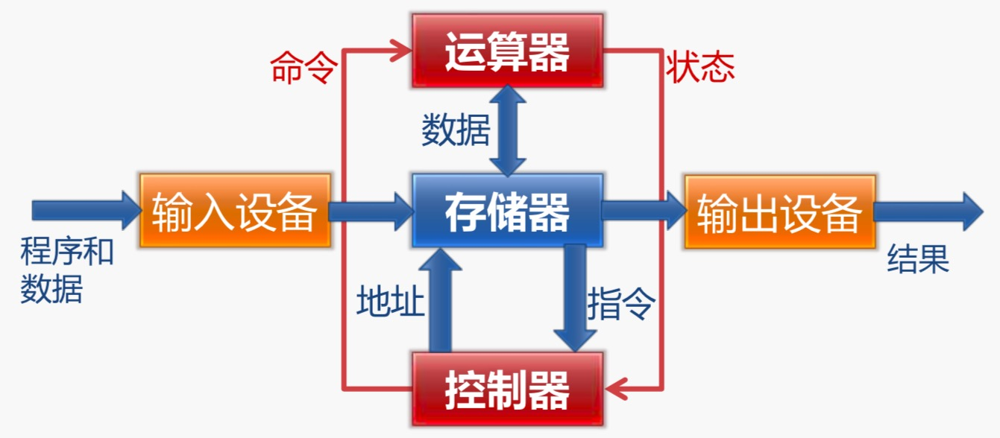
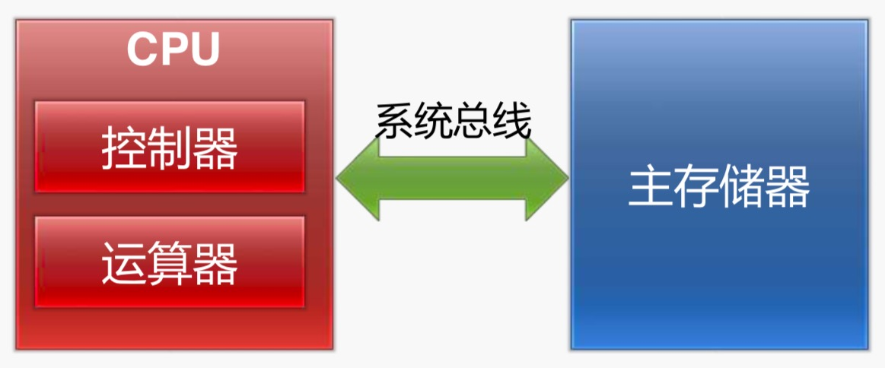
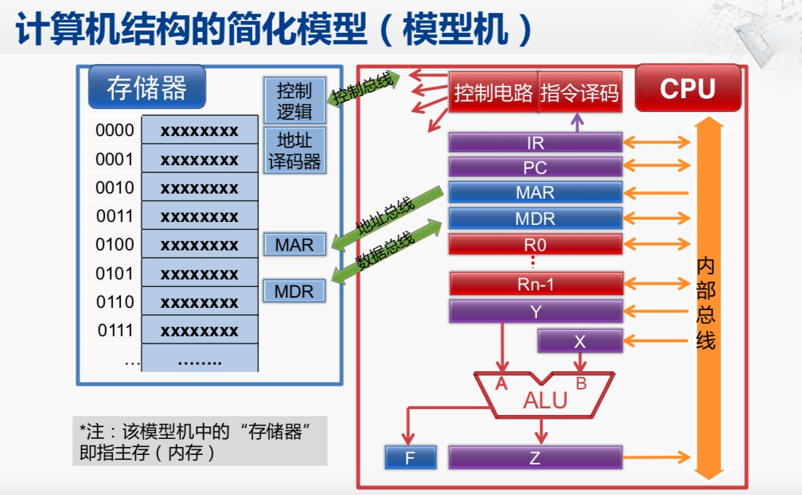
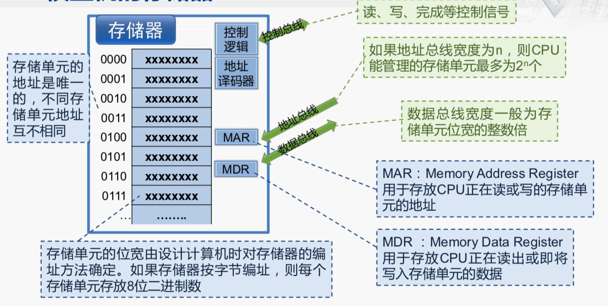
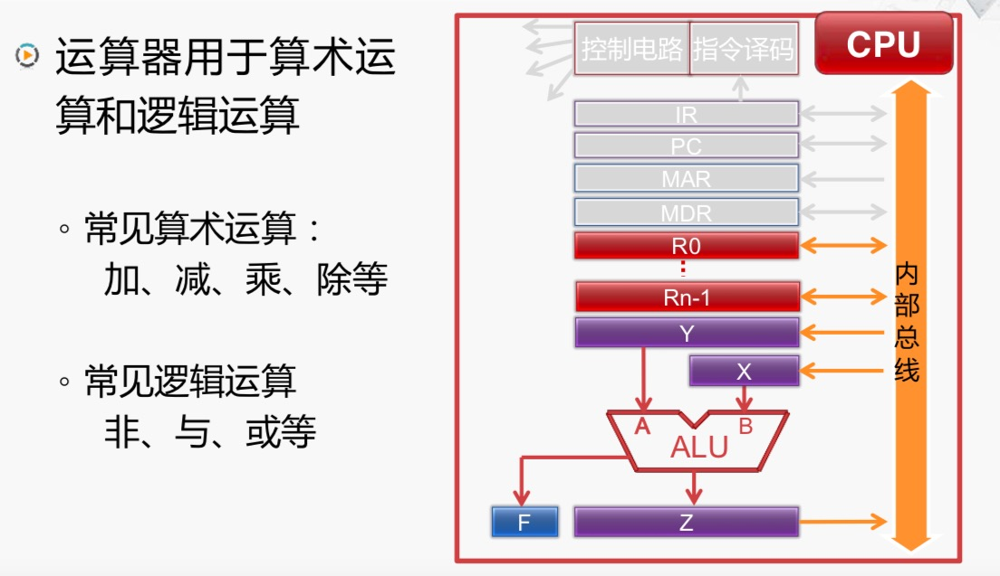
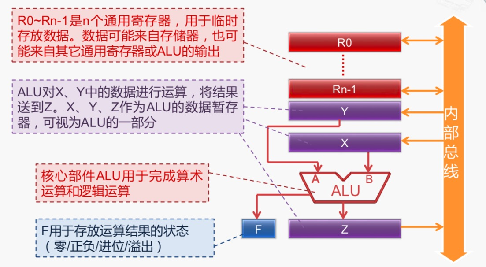
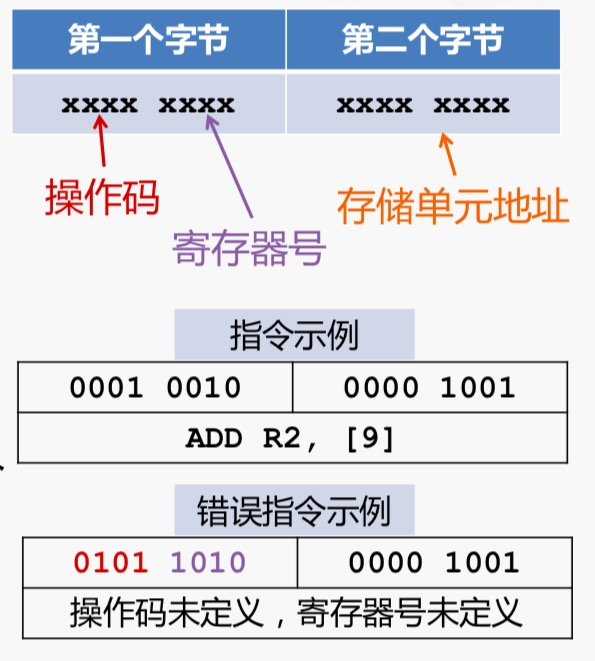
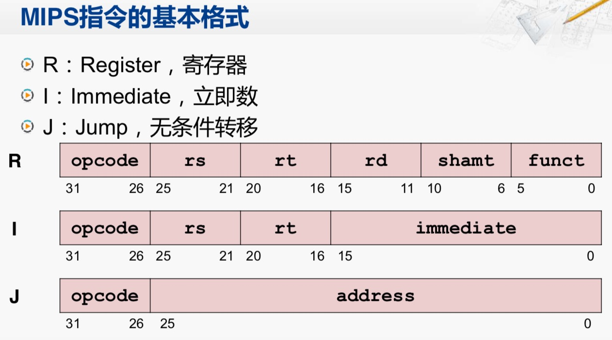
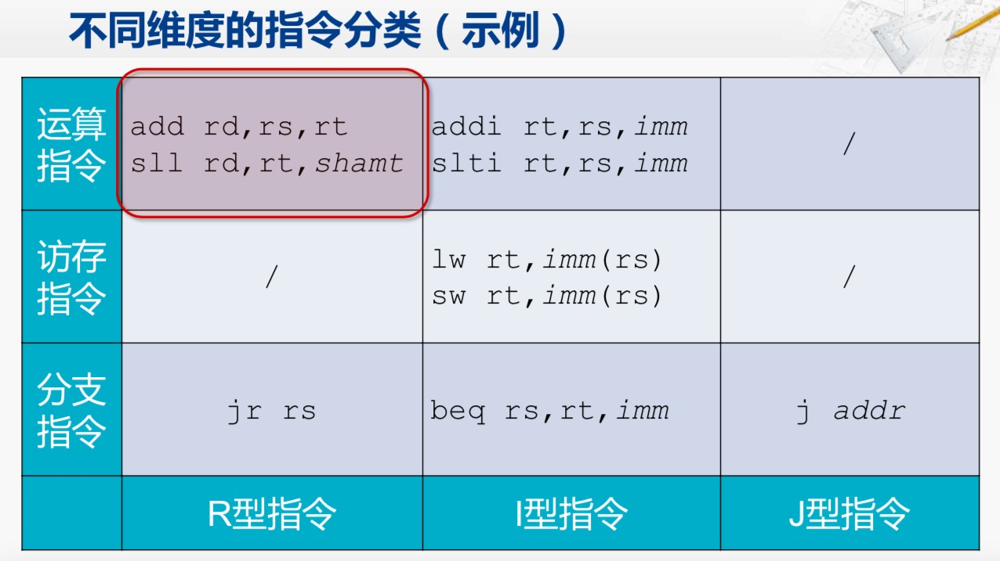
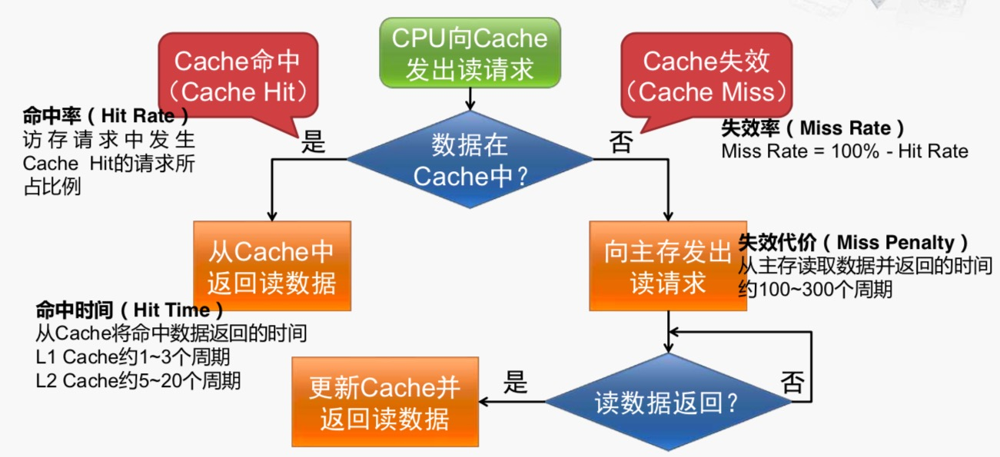

对北大的计算机组层这门课做一个简单的笔记，北大的这门课相对要求不高，懂一些数字电路、模拟电路的知识就可以上手了。
计算机基本结构
冯.诺伊曼的要点
- 计算机的五大组成部分
- 运算器: CA: central arithmetical
- 存储器: M: memory
- 控制器: CC: central control
- 输入设备: I: input
- 输出设备: O: output

- 计算机的 数据和程序 均以 二进制 形式不加区别的存放在存储器中, 存放位置由存储器的地址指定
- 计算机在工作时候能够自动地从存储器中取出指令加以执行

计算机结构的简化模型
简化模型结构如下

接下来详细介绍: 存储器、控制器、运算器这3个重要组件。 其中, 一共
- 控制总线: 双向的, 存储器和CPU 双向交流信息。
- 地址总线: 单向的, CPU将内部的MAR传递个存储器的MAR。
- 数据总线: 双向的, CPU 和 存储器之间相互传递数据。
模型机的存储器

模型机的控制器

控制器代表图中彩色的部分，其主要组成部分包括6个部分,控制器用于控制计算机各部件完成 取指令、分析指令、执行指令等功能, 其组成部分及其功能如下:
- 指令寄存器(Instruction Register, IR): 存放 正在执行或者即将执行的指令
- 程序计数器(Program Counter, PC): PC存放 下一条指令的存储单元地址, 具有自动增量计数的功能。
- 存储器地址寄存器(Memory Address Register, MAR): 在访存时 用于存放 存储单元的地址
- 存储器数据寄存器(Memory Data Register, MDR): MDR在访存是 用于存放 对存储单元读写的数据。
- 指令译码部件: 对IR中的指令进行译码, 已确定IR中存放的是哪一条指令。
- 控制电路: 产生控制信号, 在时序脉冲的同步下控制各个部件的动作。
模型机的运算器
模型机结构如下

其各个部件的功能为

计算机执行指令的过程
过程， 以 ADD R0 [6]
- 取指(Fetch): 控制器将指令地址送往存储器,存储器从给定的地址读出指令内容,送回控制器。控制器会发出信号,将PC中的信号传送到MAR中,MAR 会将地址送到地址总线上，与此同时，在控制总线上，控制电路会发出信号，代表这次存储器操作是为了读取数据。地址译码器会将这次信号翻译成地址，存储器的控制逻辑也会将这次控制信号翻译成“Read” 操作。此刻，存储器通过地址(0001)和Read 信号就能找到存储器对应地址的内容(10101010),而且会将这个内容存到MDR 中，此后，存储器控制逻辑通过控制总线会向CPU反馈当前存储已经准备好了，随后数据总线也会将数据放到MDR.
最后的最后，需要将PC更新成为下一条指令需要访问的地址。 - 译码(Decode): 控制器分析指令的操作性质,并向相关部件发出指令所需的控制信号。当前的指令寄存器(IR),会将指令编码送往指令(10101010)译码部件中去，指令译码之后会得到这是 “ADD R0 [6]”
- 执行(Excute): 控制器从通用寄存器或存储器中取出操作数, 控制器命令运算器对操作数进行指令规定的运算。i.e.,
- 回写(Write-Back): 将运算结果写到存储器或者通用寄存器中，运算结果目前还存放在Z寄存器中，控制电路会给出控制信号，会将Z寄存器存放在R0 中
计算机的输入输出
指令体系结构(Instruction Set Architecture)
设计自己的计算机
一个简单的计算机指令系统
- 运算类指令: ADD R, M
将R的内容与M的内容相加后存入R - 传送类指令: LOAD R, M, 功能是将M中的内容传入R中, 对应的还有STORE M, R, 将R中内容存入M中。
- 转移类指令: JMP L, 功能是转向L 所指向的下一条指令来执行.
注意: M, L 均指的是存储器地址，而R则指的是寄存器编号。
指令的格式
- 指令是等长的，均为两个字节
- 第一个字节的高4位是操作码， 可以标注为LOAD: 0000; ADD: 0001; STORE: 0010; JMP: 0011
- 第一个字节的低4位是寄存器好: R0-R3 分别对应 0000-0011
- 第二个字节是存储单元地址.
举个例子

运算任务示例
任务: 将M1 的内容与M2 内容相加后存入M3, 完成运算后程序转向L处指令继续执行
- LOAD R1, M1
- ADD R1, M2
- STORE M3, R1
- JMP L
X86 体系结构
MIPS 体系结构
精简指令集代表(Reduced Instruction Set Computer). 而CISC 的指令操作数必须预存与寄存器中, MIPS(Microprocessor without Interlocked Piped Stages).
MIPS 指令的主要特点:
- 固定的指令长度
- 简单的寻址模式: 简化了从存储器取操作数
- 指令数量少，指令功能简单: 一条指令只完成一个操作。
- 只允许Load, Store 指令可以访问存储器(不支持: ADD AX, [3000H] 这种x86 指令), 也就限定了大部分的操作都不能是存储器操作数。
- 需要有优秀的编译器的支持
MIPS 指令简介: 包括了R, I, J 型3中指令形式。


算术逻辑单元 与 寄存器
常见的门电路都是由NMOS 或者 PMOS 组成。 非、与、或、与或、与非 都可以用NMOS 或者 CMOS 实现。
存储器是由D触发器实现的。
逻辑运算的实现:
单周期处理器设计
建立数据通路
指令的需求
所有指令的共同需求
- 取指令: PC的内容是指令的地址，用PC的内容作为地址，访问存储器获得指令编码。
[更新PC 有两种情况: (1). 顺序执行:PC = PC + 4, (2). 发生分支: PC = 分支目标的地址
- 取指令: PC的内容是指令的地址，用PC的内容作为地址，访问存储器获得指令编码。
不同指令的需求
- 加法和减法指令的需求
]
流水线处理器
MIPS 五级流水及其各自功能
- 取指(Fetch): 从存储器取指令, 更新PC
- 译码(Decode): 指令译码, 从寄存器对中读出寄存器的值
- 执行(Execute): 运算指令: 进行算术逻辑运算, 访存指令: 计算存储器的地址。
- 访存(Memory): Load 指令: 从存储器读数据, Store 指令: 将数据写入存储器。
- 回写(Write-back): 将数据写入寄存器堆。
五个阶段流水线执行: IF, ID, EX, MEM, WB
理想形式下, 各个阶段都是等长阶段, 但是不平衡的需要采取一些划分等手段来进行平衡。
流水线也不是级数越多越好, 尽管可以提高时钟频率，从而提高指令的吞吐率， 过深的流水线会带来额外的性能损失。
另一条思路, 就是超标量(Superscalar)流水线: [具有两条或者两条以上并行工作的流水线结构称为超标量结构]
- 单周期 –> 标量流水线: 考虑的是时间并行性的优化, 主要是对现有硬件进行切分。
- 标量流水线 –> 超标量流水线: 空间并行性的优化, 需要成倍的增加硬件资源。
流水线的冒险(Hazard)
冒险: 阻止下一条指令在下一个时钟周期开始执行的情况。
- 结构冒险: 所需硬件正在被之前指令占用。
- 数据冒险: 当前指令需要等待之前指令完成数据的读写才能执行。
- 控制冒险: 需要根据之前的指令结果决定下一步的行为。
解决方案
结构冒险:
- 流水线停顿(stall), 会产生空泡(bubble)
- 指令和数据放在不同的存储器中, 只是L1 Cache 会分别存放 指令和数据。
数据冒险:
- stall 方法是万能的。
举个例子:
- sub t0, s1, s2
- add s3, t0, s4
add 指令会用到 sub 指令的结果: 此时可以通过stall 的方法，但是会产生bubble.
- 数据前递(Forwarding): 可以解决一部分问题，但是特别棘手的 Load-Use data hazard 还是
- stall 方法是万能的。
控制冒险
先理解什么叫做转移开销:- 将顺序预取的指令废除(也即“排空流水线”): “要不要转移?” 也即转移条件判定引起的开销
- 从转移目标地址重新取指令: “转移到哪里？”生成目标地址引起的开销
存储器层次结构
SRAM: 是由六个晶体管组成的单元组件组成。现代CPU 高速缓存一般都用SRAM 实现, 其优缺点都很明显
- 优点: 速度快
- 缺点: 集成度低(毕竟6个晶体管)、功耗高(晶体管能耗高)、价格贵
DRAM: 由一个电容构成。 其优缺点为:
- 优点: 集成度高、功耗低、价格低
- 缺点: 速度慢、定时刷新
程序的局部性原理: 计算机程序从 时间 和 空间 都表现出局部性。 时间局部性(Temporal locality) 指的是最近被访问的存储器单元(指令或者数据) 很快还会被访问。空间局部性指的是 正在被访问的存储器单元附近的单元很快被访问。
- Cache 对时间局部性的利用: 从主存中取回待访问的数据事，会同时取出相邻位置的主存单元的数据，Cache 以数据块为单位和内存进行数据交换。
- Cache 对空间局部性的利用: 保存近期频繁被访问的主存单元的数据。
Cache 命中时的写策略
- 写穿透(Write Through): 数据同时写入Cache 和主存中。
- 写返回(Write Back): 数据只写入Cache 中，仅当该数据块被替换时才将数据写回主存。
Cache 未命中(失效) 的写策略
- 写不分配(Write Non-Allocate): 直接将数据写入主存.
- 写分配(Write Allocate): 将数据所在的块读入Cache 后，再将数据写入主存。
Cache 的设计要点
Cache 的访问过程
$$平均访存时间 Average Memory Access Time = Hit Time + Miss Penalty x Miss Rate$$
由这个公式, 指明了3哥减小访存时间的方法
- 降低Hit Time
- 减少Miss Penalty
- 降低Miss Rate
1,2 亮点都挺难的，我们关注一下如何提高命中率,也即如何降低Miss Rate, OK, 我们先来分析一下Cache 失效的原因:
- 义务失效(Compulsory Miss): 第一次访问某一数据块, 也称为冷启动失效(Cold Start Miss)
- 容量失效(Capacity Miss): Cache 无法保存程序访问所需的所有的数据块。
- 冲突失效(Conflict Miss): 多个存储器映射到了同一个Cache 位置。 这牵涉到Cache 的映射策略问题
中断和异常
- 中断向量表的结构
拿8086 处理器举例: 其 00000H - 003FFH (1K 个字节) 是专门存放中断表向量区域的位置。存放了256个中断程序的入口地址，每个入口地址占4哥字节单元。 - 中断的处理过程:
- 关中断: CPU 关闭中断响应, 即不再接受其他外部中断请求。
- 保存断点: 将发生中断处的指令地址压入堆栈, 以使中断处理完后能正确地返回。
- 识别中断源: CPU 识别中断的来源,确定中断类型，方便找到相应中断处理程序
- 保护现场: 将发生中断处的有关寄存器(中断服务程序中要使用的寄存器) 以及 标志寄存器的内容压入堆栈。
- 执行中断服务程序: 转到中断服务程序入口开始执行, 可在适当时刻重新开放中断, 以便允许相应较高优先级的外部中断。 重新开放中断涉及到标志寄存器(FLAGS) 的 IF 标志位。IF = 1 表明允许CPU 响应可屏蔽中断请求, IF = 0 表示不允许CPU 相应可屏蔽中断请求。
- 恢复现场并返回: 把”保护现场” 时压入的堆栈信息弹回原寄存器, 然后执行中断返回指令, 从而返回主程序继续执行。
通常情况下，前3步又硬件完成，后3步由软件完成。
- 内部中断的分类
- 类型0 (除法错中断): 执行除法指令后，若所得商超过了目标寄存器所能表示范围，则促发除法错中断。
- 类型1 (单步中断): 触发信号为 FLAGS 中 TF 位置置于1, CPU 便处于单步工作方式。 一般用于调试和发现错误。一般会将各个寄存器内容都显示出来，以便调试。
- 类型3 (断点中断): 与单步中断类似，断点中断也是调试程序的手段。 两者的组合使用方法: 一个大的程序，先通过断点将程序某一个错误确定在程序的一小段，然后再对这一小段程序采用单步方式进行跟踪调试
- 设置断点: 用INT3 替代 用户原有指令 并 保存用户程序原有指令。
- 发生断点: 执行INT 3.
- 回复执行: 断点中断程序返回前, 恢复用户程序原有指令，并将IP值减1，中断返回后，CPU从断点处继续执行。
- 类型4 (溢出中断):
注意，类型2(非屏蔽中断) 其实是一种外部中断。
内部中断的特点
- 中断类型号: 内部中断的类型号由 CPU 内部产生, 而外部中断则需要从外部设备中读取中断类型号。
- 屏蔽方式: 除了单步中断外, 所有的内部中断都不能用软件方法来屏蔽。 但是单步中断则可以通过软件将TF标志置为1或者0 来允许或者禁止。
- 优先级: 除了单步中断外, 所有内部中断优先级都比外部中断高。
基于中断功能的调用
X86 中专门提供了一条中断指令: INT n. 其中n 为 0-255 某个数，对应中断类型码, 中断指令执行过程如下
- 将FLAGS寄存器内容压栈
- 清除中断标志IF 和 单步标志TF.
- 将 CS 和 IP 寄存器的内容压栈。
- 根据中断类型码查找中断向量表，取得对应的中断服务程序的入口地址
- 将入口地址分别装入CS 和 IP 寄存器中。
输入输出设备
输入输出接口
输入输出接口的基本功能
- 数据缓冲突: 解决CPU 与 外设之间速度差异
- 提供联络信息: 协调同步数据交换过程
- 信号与信息格式的转换
- 设备选择
- 中断管理
- 可编程功能
常见的I/O 端口编址方式
- I/O 端口和存储器分开编址方式(也即I/O映像的I/O方式): x86 采用此方式。在分开编址情况下, 除了地址单元外，还需要MIO信号 来表明当前地址属于 存储器 or I/O 接口
- 不用占用存储器地址, 不占用存储器地址空间。
- 执行速度快。
- I/O 指令的地址码较短, 地址译码方便。
- 采用单独的I/O 指令, 使得程序中I/O 操作和其他操作层次清晰, 便于理解。
- I/O 端口和存储器统一编址: 两者地址共享，不会冲突。
- 优点: 可以用访问存储器的指令来访问I/O 端口,访问存储器的指令功能比较齐全, 可以实现直接对I/O端口内的数据进行处理。 同时, 可以将CPU的I/O操作和访问存储器共用一套控制逻辑, 简化了内部结构, 同时减少了CPU的引脚数目。
- 缺点: 由于I/O 端口占用了一部分存储器地址空间, 因而使得存储地址空间减小。而且共用一套访问存储器指令来进行I/O 操作，指令比单独I/O 指令要长, 因此指令执行时间也长。
I/O 控制方式
程序控制方式:
中断控制方式:
数据的输入过程:
- 系统初始化是，CPU 执行指令, 将控制字写入接口的控制寄存器, 设置接口的工作模式。
- 外设将数据发到 “并行数据输入” 信号, 并将“输入准备好” 信号置为有效。
- 接口发现 “输入准备好” 信号有效后, 从”并行数据输入” 信号接收数据, 放入“输入缓存存储器” 并将 “输入回答” 信号置为有效, 防止外设输入新数据。
- 接口通过中断控制逻辑 向CPU 发出中断请求信号, 并将 “状态寄存器” 中的“输入缓冲满” 置为有效。
- CPU 收到中断请求后，进入中断服务程序, 执行指令从“状态寄存器” 中读出状态字, 发现“输入缓冲满”, 因此执行指令, 从“输入缓冲寄存器” 中读出数据。
- 接口将 “输入回答” 信号置为无效, 等待外设输入新数据.
数据的输出过程:
其优点包括:
- CPU 可以和外设并行工作, 提高了工作效率。
- 外设拥有了主动申请服务的主动权
- 一定程度上瞒住了I/O 处理的实时性要求。
缺点包括: - 外设和存储器之间的数据交换仍由CPU承担。
- 存储器直接控制方式(DMA):
外部中断处理过程
来自于外设的可屏蔽中断的处理过程
中断嵌套
- 当CPU正在执行中断服务程序时, 发生了优先级更高的中断请求
- CPU 响应优先级更高的中断请求, 将正在处理的中断暂时挂起
- CPU 完成优先级更高的中断服务后，返回此前优先级较低的中断服务程序继续执行。